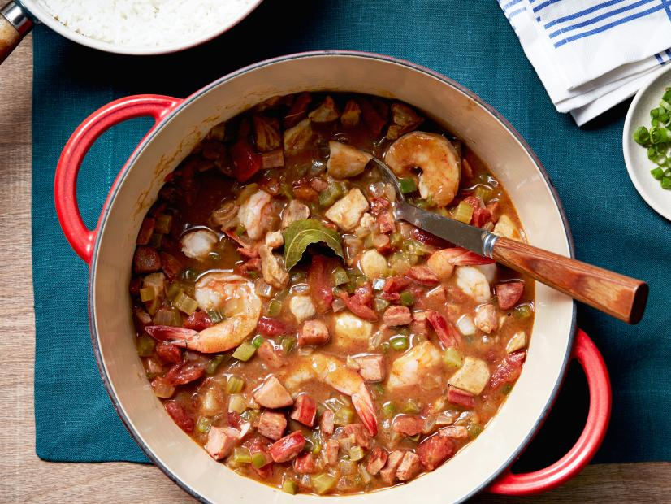

The World's Best Jambalaya Recipe

This Jambalaya is the mother fuckin' bomb!
Ingredients
- 1 tablespoon extra-virgin olive oil, once around the pan
- 1 tablespoon butter
- 1 pound boneless, skinless white or dark meat chicken
- 3/4 pound andouille, casing removed and diced
- 1 medium onion, chopped
- 2 ribs celery, chopped
- 1 green bell pepper, chopped
- 1 bay leaf, fresh or dried
- Several drops hot sauce or 2 pinches cayenne pepper
- 2 to 3 tablespoons (a handfli) all-purpose flour
- 1 (14-ounce) can diced tomatoes in juice
- 1(14-ounce) can or paper container chicken stock or broth
- 1 teaspoon (1/3 palmful) cumin
- 1 rounded teaspoon (1/2 palmful) dark chili powder
- 1 teaspoon (1/3 palmful) poultry seasoning
- 1 teaspoon Worcestershire sauce
- 1 pound medium shrimp, raw, deveined and peeled (ask for easy peel at fish counter)
- Coarse salt and black pepper
- Chopped scallions, for garnish
- Fresh thyme, chopped for garnish
- 2 cups enriched white rice